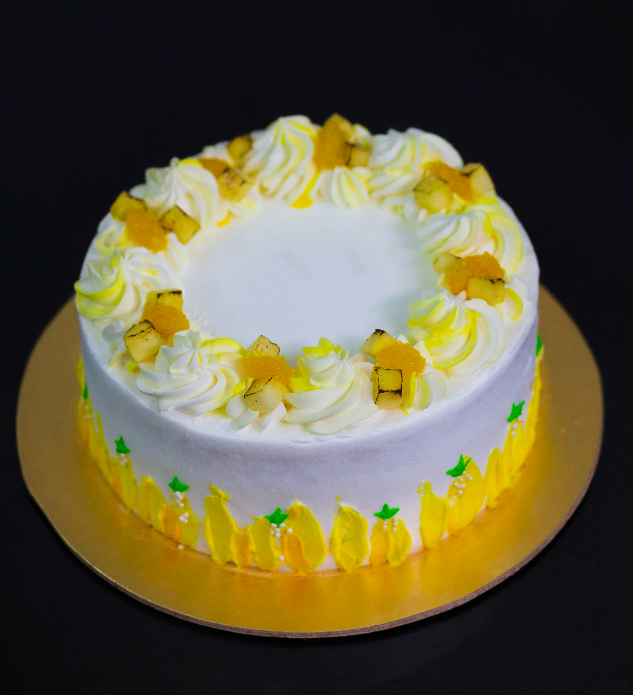

Ingredientes
Para a Massa:
- 4 ovos
- 1 xícara de chá de leite quente
- 1 xícara de chá de açúcar
- 1 xícara e 1/2 de chá de farinha de trigo
- 1 colher de sopa de fermento
- Margarina para untar a forma
Para o Recheio:
- 1 xícara de chá de abacaxi picado
- 1 caixinha de creme de leite
- 1 lata de leite condensado
- 2 xícaras de chá de coco fresco ralado
Modo de Preparo:
Massa
- Bata as claras em neve, junte as gemas e o açúcar, aos poucos.
- Sem parar de bater, junte o leite.
- Acrescente delicadamente a farinha e o fermento peneirados.
- Coloque numa forma (média) redonda untada e enfarinhada.
- Leve ao forno (médio) por cerca de 30 minutos.
- Retire e espere esfriar
- Corte o bolo ao meio.
- Reserve
Recheio
- Cozinhe o abacaxi com leite condensado, por 5 minutos.
- Junte o creme de leite, o coco ralado e deixe cozinha por 5 minutos.
- Recheie ao meio ou cubra o bolo reservado
- Leve a geladeira por 1 hora
- Sirva como preferir